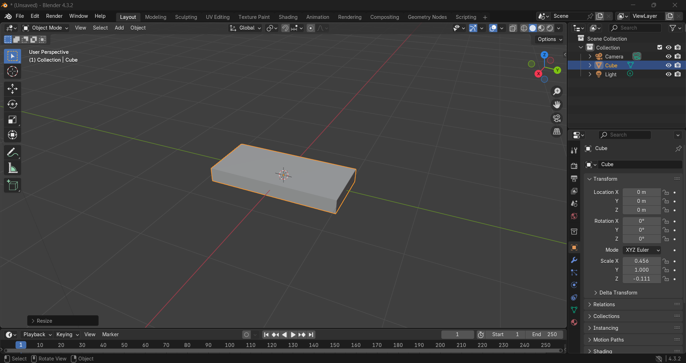
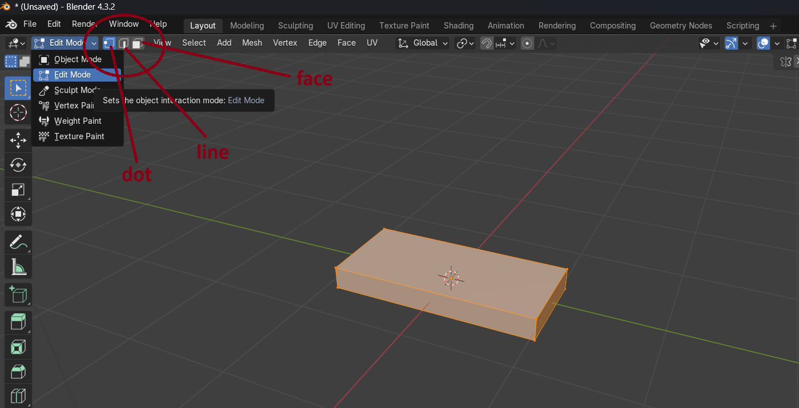
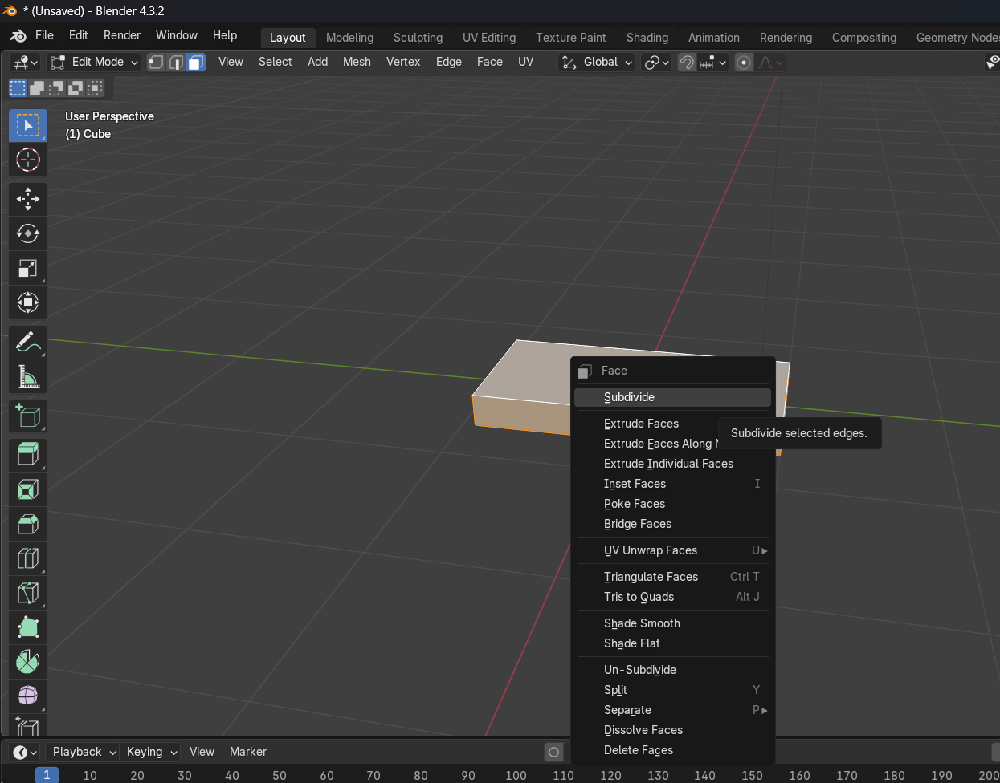
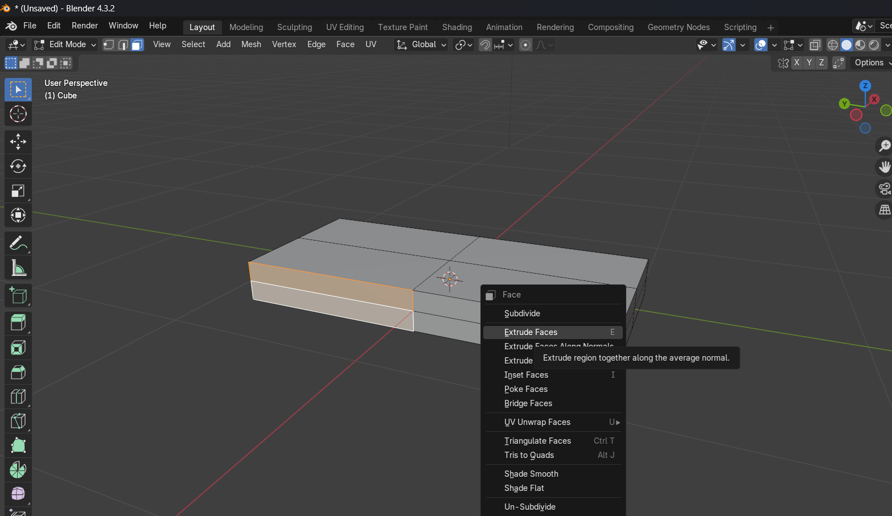
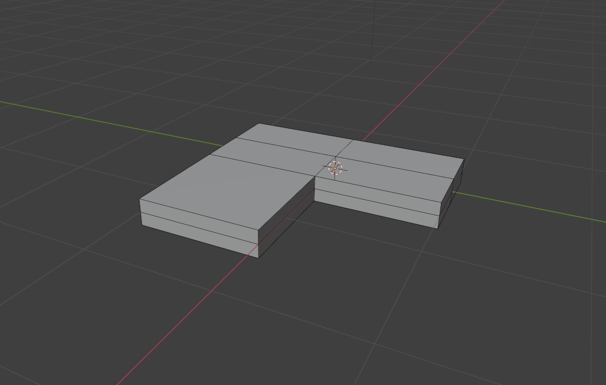
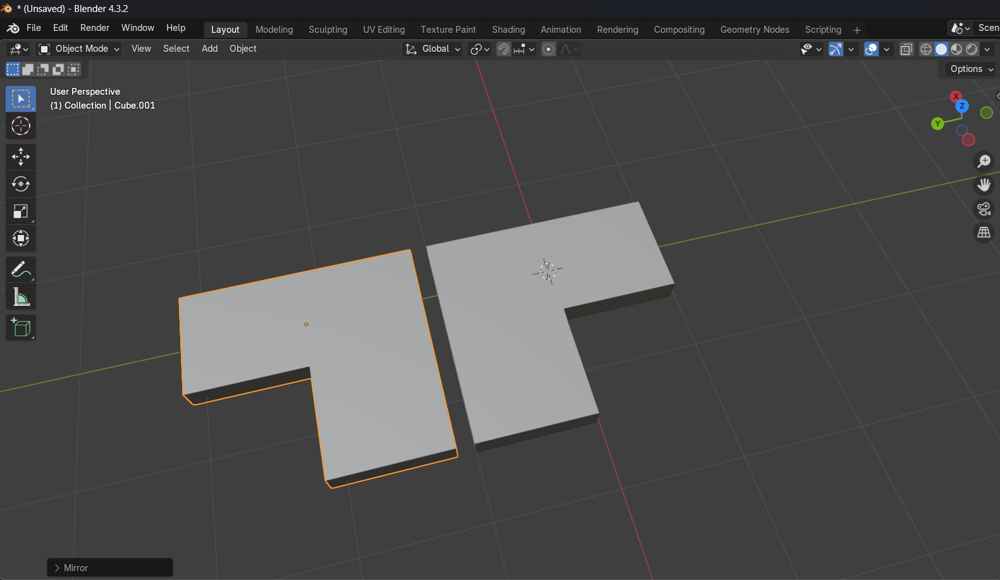
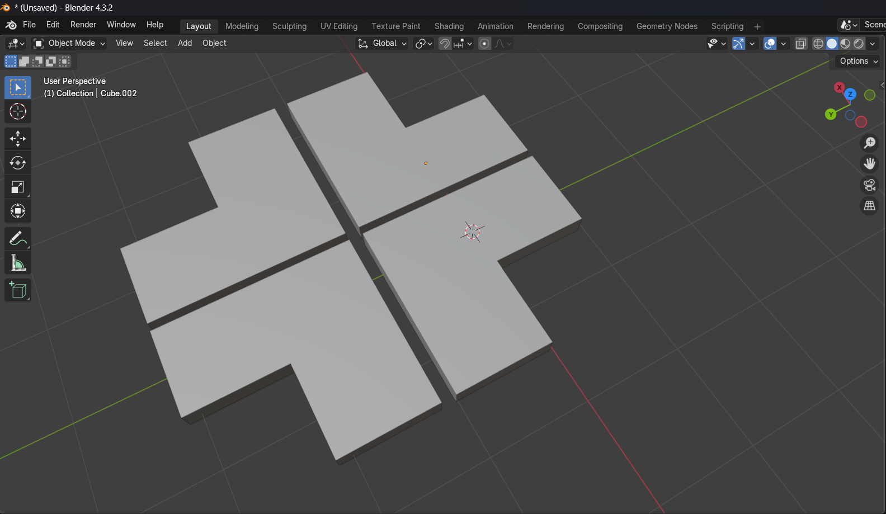

St. Patrick Objects
"it doesn't have to be perfect, just needs to be belivable"
Overview

Simple cubes can look nice when used properly, learning how to extrude can help form the cube to various things, in the picture above, it formed a pot of gold, a hat and a 4-leaf clover.
4 leaf clover
Step 1: scale the default cube
you need to scale the cube so it becomes a "kinda" flat rectangle, click on the cube and press the 'S' key to scale the cube, notice how your cube will scale big or small, depending on how close your mouse cursor is to your object
pressing 'X', 'Y' or 'Z' on the keyboard while scaling allows you to scale in the respective axis (you can see a glow in the lines when you press for certain axis)
Your goal is to make this rectangle
Step 2: subdivide and extrude
You need to jump to edit mode in order to do this, go find a dropdown menu that has the word 'Object mode' and then click on edit mode
Edit mode will be the primary mode on forming your cubes through extrusion, but first, learn some shortcuts, pressing '1', '2' and '3' will let you switch select modes on your object, which is vertex(dot), edge(line) and face(face). Or you can just click on the modes next to the dropdown
set the select mode to 'Face' and press 'A', this shortcut lets you select all the faces in that object, this would be the time to right-click, and click 'subdivide'
'subdivide' essentially works like cutting a cake to smaller pieces, it makes your rectangle, once failled with one face, now just got divided to 4 more on each side
Now you need to 'Shift + left click' the two faces highlighted on the picture, right click and select extrude, or, press 'E' to extrude
Your rectangle should look something like, this
Step 3: Duplicate and mirroring
Go back to object mode and click on your L shape object, press 'Shift + D' to duplicate, bear in mind once you do this, the duplicate will float along your cursor, as long as you don't left click, the duplicate won't let go, you would need to duplicate and move it horizontally, placing it beside the original
Next, click on the duplicate object and press 'Ctrl + M' to mirror the duplicate, the mirroring won't work unless you specify the axis, 'X', 'Y' or 'Z', if you are not used to axis yet, try all the axis and see which one gives this:
Lastly, 'Shift + left click' to select both L's and duplicate them, mirror them to a certain axis, and try get this: (press 'G' to grab a certain object, press one of the axis to move them across that axis)
Step 4: Parenting and finishing touches
the clover is missing a branch, press 'Shift + A' and click mesh -> cube to add a cube, scale and form it to a branch and somehow fit it in the clover, here is a video attempt of me spamming 'G' and 'S':
It doesn't have to be perfect. It won't matter much in the long run.
Finally, 'Shift + left click' all the 4 L's and then the branch last, click 'Ctrl + P' to parent, what this does is it makes a group, linked to the branch, that way, when you wish to move your clover or rotate it, all you gotta do is move the branch
Many shortcuts, many features
one thing at a time, with practice, you will be able to use shortcuts and keybinds without even thinking about it, Blender relies on it's shortcuts to boost productivity, knowing which to press makes your life much easier than doing a bunch of clicks.